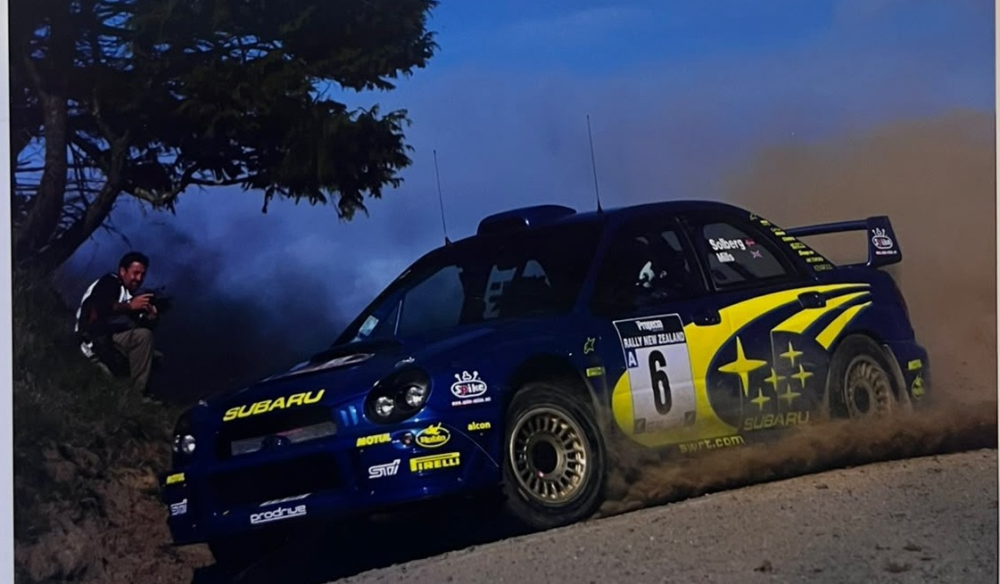
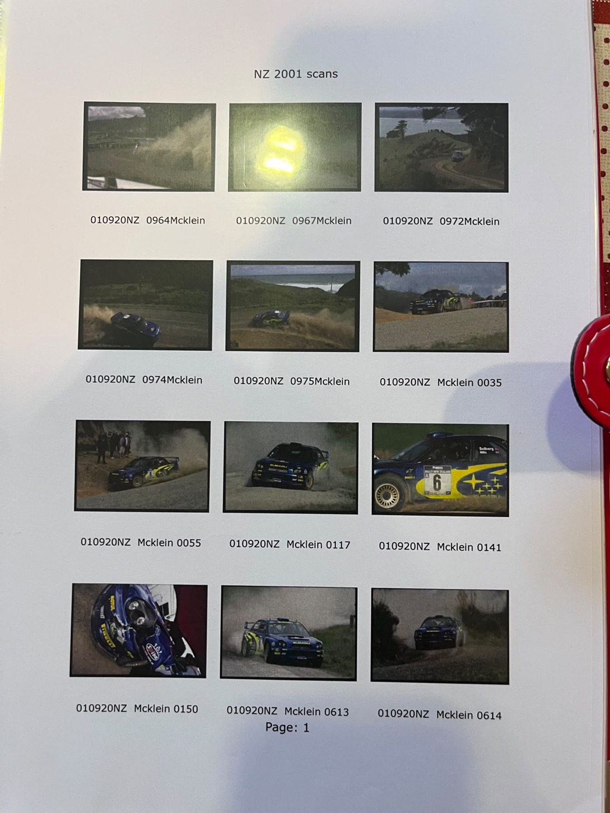
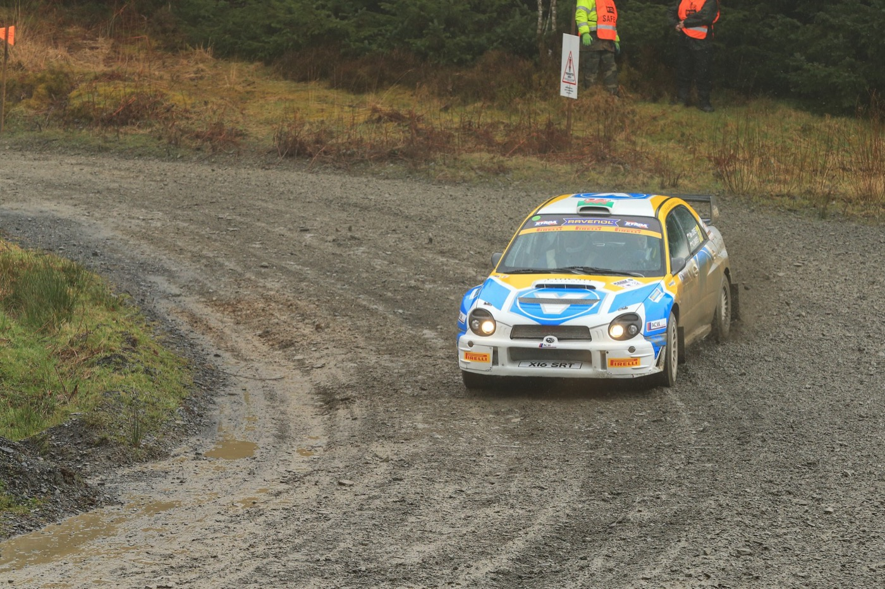
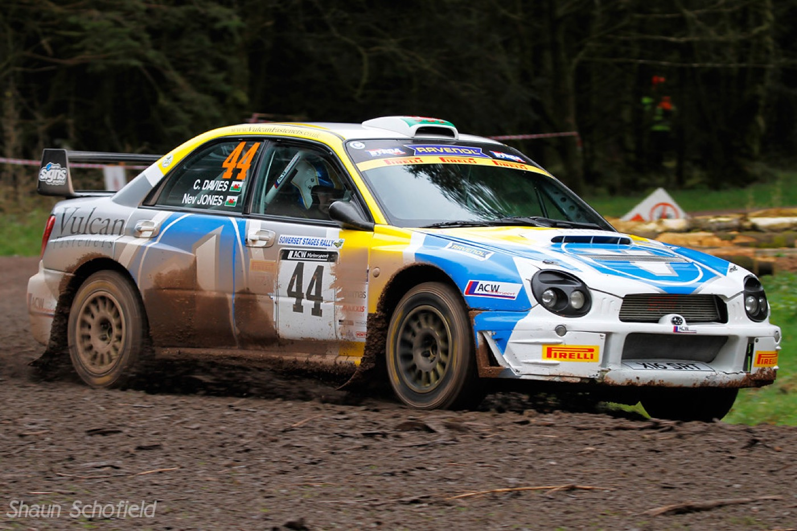
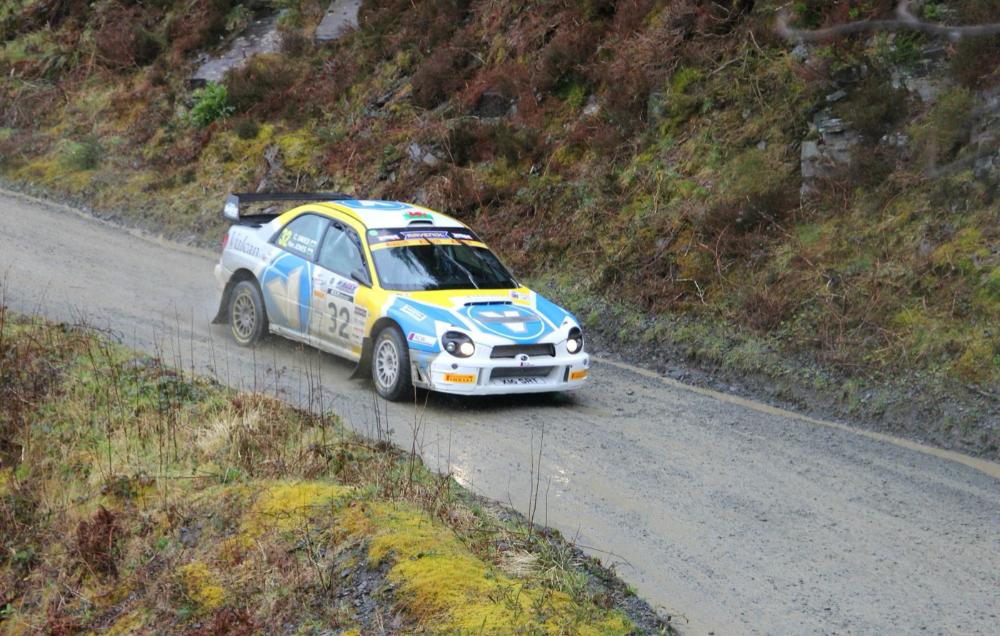
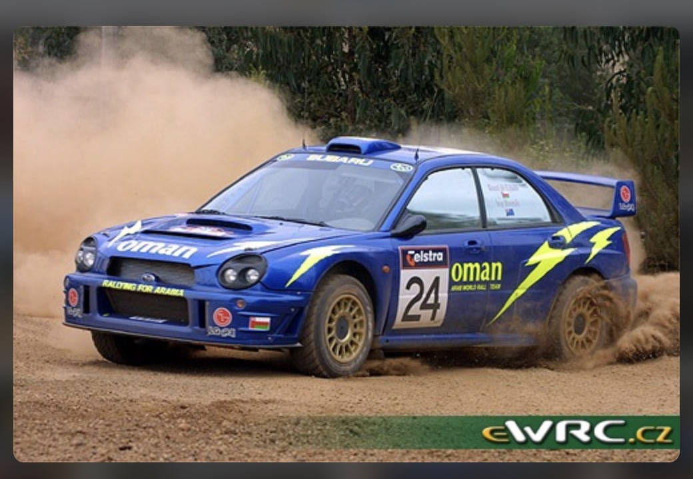
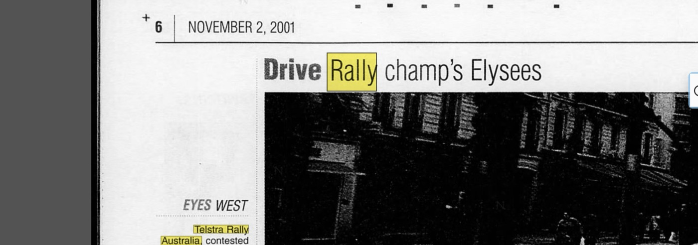
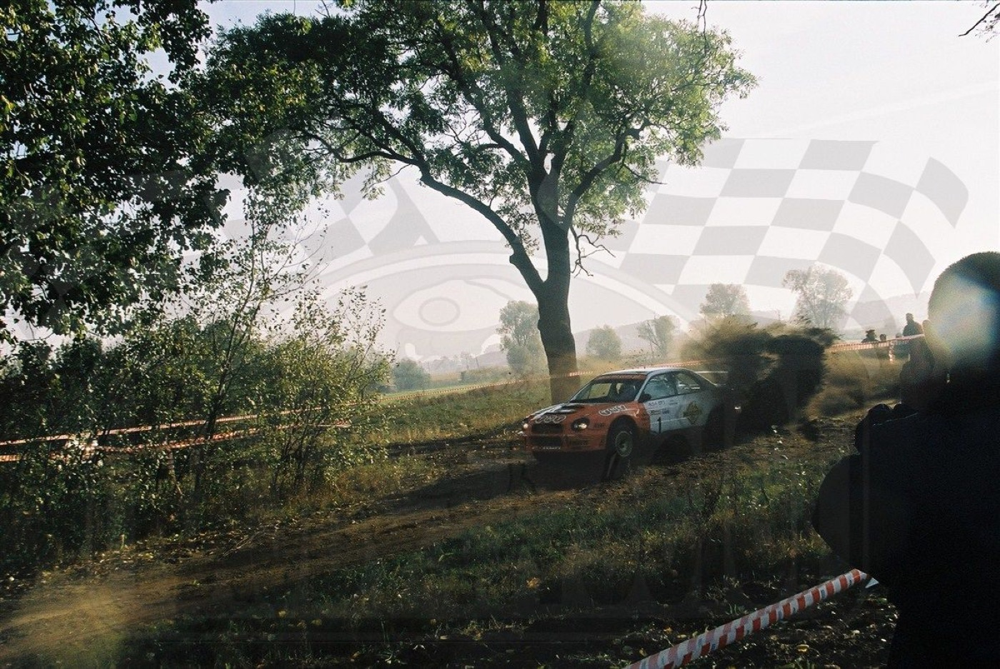

Automotive Masterpieces
Telaio PROGD01022 · Targa X16 SRT
World Rally Car FIA · trazione integrale · turbo 2.0L
Storia
Fotografie







Documenti
17 marzo e 17 maggio 2014
Targa e numero di telaio riportati insieme — base della catena di identità britannica.
Non datato
Attribuisce il telaio al debutto 2001 con Solberg — dichiarazione del venditore, non verificata indipendentemente a livello di telaio.
Database, consultato 2026
Fonte indipendente dal rivenditore: 38 partecipazioni 2001–2017 per la targa X16 SRT; cita autonomamente "Chassis #22".
2014 · 2019
Confermano la continuità di proprietà 2014–2019. Non riprodotti: riportano l'indirizzo di residenza privato degli intestatari.
Dal materiale iniziale alle conclusioni verificabili.
Punto di partenza
Automotive Masterpieces ha ricevuto un dossier di vendita, fotografie del cliente, un foglio dattiloscritto di storico gare e i documenti di immatricolazione britannici. Il dossier attribuiva il telaio PROGD01022 alla vettura #6 di Solberg/Mills al Rally di Nuova Zelanda 2001. Fornito dal cliente — un'affermazione di partenza, non una verifica indipendente.
Evidenze
34 elementi raccolti e classificati (28 evidenze dirette; le restanti registrano ricerche senza esito, non usate come prova).
Cosa emerge
Targa X16 SRT e telaio PROGD01022 sono abbinati sullo stesso documento ufficiale in 6 documenti primari indipendenti, 2014–2019.
Data di immatricolazione/costruzione registrata come 04-2001.
Il numero di telaio compare in grafie diverse a seconda del documento (PROGD01022 / PRO-GD-01-022 / PROGDA01022 / "022").
Una Subaru Impreza S7 WRC '01, #6, Solberg/Mills, ha corso il Rally di Nuova Zelanda 2001.
Piazzamento finale della #6 al Rally di Nuova Zelanda 2001: 7°.
Il telaio PROGD01022 specifico è la vettura usata al Rally di Nuova Zelanda 2001.
La #24, Al-Wahaibi/Sircombe (Oman Arab World Rally Team), ha corso il Telstra Rally Australia 2001.
Venduta a Leszek Kuzaj (Polonia): 3 vittorie, 3° nel campionato polacco 2003.
Passata a Jean-Marie Cuoq (Francia): 2° nel campionato Terra 2004, 5 vittorie su 8 gare.
Ha corso in Benelux nel 2005–06 con più equipaggi (Munster, Droeven, Groenewoud, van den Heuvel).
Rally club UK 2014–2017 sotto X16 SRT, Neville Jones/Chris Davies.
2017, Rallye Terre des Causses (Francia), "Piano"/Paolo Cottu.
John Neville Jones, intestatario registrato dal 13/03/2014 circa.
Un secondo modulo V62 (17/05/2014) cita Karl Davies, stesso indirizzo di Jones.
Proprietà trasferita a EMMEPI SRL (Italia) il 31/08/2016.
BGM Sport ha fatturato la revisione cambio il 19/12/2018, fatturata a Girardo & Co.
Girardo & Co Private Sales ha detenuto il V5C come intestatario prima del 20/05/2019.
Andrea Saccheggiani intestatario dal 20/05/2019, stesso indirizzo di Girardo & Co.
Il MOT 2018 conferma la continuità PROGD01022/X16 SRT.
Dove siamo oggi
Supportata, non ancora verificata.
Nessuna fonte primaria dell'epoca (2001–2013) collega finora direttamente il telaio PROGD01022 alla vettura ufficiale del 2001.
Verificato — Rally di Nuova Zelanda 2001: 7° posto.
Verificato — storia agonistica 2001–2017 ricostruita in dettaglio.
Nuovo — periodo Benelux 2005–06 emerso dalla ricerca, assente dalla narrazione Girardo.
Verificato — catena di identità e proprietà 2014–2019 solidamente documentata.
Prossimi passi